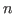
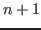

suivant: Méthode utilisée
monter: Traduction de fichiers d'informations
précédent: Traduction de fichiers d'informations
Table des matières
Index
Étude des fonctionnalités
Le but de cet exemple met en évidence comment, avec une simple procédure, il
est possible de mettre en place des outils puissants de conversion.
Le but de cet exemple est de transformer la base complète des comptes utilisateurs
et projets sur un système OpenVMS vers un système UNIX. Nous considérerons
qu'éventuellement, une partie des ces comptes sont déjà existants sur la machine
UNIX et, par conséquent, l'entrée déjà existante doit être prise en
compte. En effet, si nous considérons que :
- tout élève de l'année "" doit posséder un compte
sur la machine UNIX,
- seulement une partie des élèves de l'année "" doit
posséder un compte sur la machine UNIX,
- tous les élèves de toutes les années possèdent un compte sur
OpenVMS,
- le nom du compte OpenVMS fait au plus douze caractères,
- le nom du compte UNIX fait au plus huit caractères,
- le nom du compte OpenVMS est de la forme
"nom_initiale_prénom" en majuscules,
- le nom du compte UNIX est de la forme "nom" en minuscules,
- le nom des groupes projets sur OpenVMS est de la forme
"projet",
- le nom des groupes projets sur UNIX est de la forme
"pprojet".
Nous supposons que nous disposons d'un ensemble de fichiers donnant les
caractéristiques des utilisateurs à créer. Dans le cas
présent nous disposons des informations décrites au tableau
![[*]](crossref.png) .
.
Tableau:
Description des fichiers
en entrée ou en sortie pour la converions des utilisateurs OpenVMS
vers UNIX.
| Fichier |
Description |
| lcluaf.txt |
Contient la liste des noms des groupes de projets sur
OpenVMS. Chaque ligne est composée de deux champs séparés
par le caractère ":" avec :
- le nom du groupe projet sur OpenVMS,
- la liste des noms de compte OpenVMS appartenant à
ce projet, chaque nom étant séparé par le caractère
",".
|
| list.txt |
La liste de tous les noms de compte OpenVMS devant posséder un accès
sur la machine UNIX. |
| who.txt |
Toutes les informations sur les utilisateurs OpenVMS. Nous aurons le
prénom, le nom et la classe en toute lettre. Le format de ce fichier est
le suivant :
- le nom du compte OpenVMS,
- un nombre quelconque d'espaces,
- le caractère "!",
- un espace,
- le prénom et le nom
- un espace,
- le caractère "-",
- un espace,
- la classe
|
| passwd |
La base des utilisateurs UNIX actuels. |
|
Remarque 16..3 :
Le fichier "list.txt" est facilement déduisible du fichier
"lcluaf.txt". Afin de ne pas surchager cet exemple, nous considèrerons
qu'un utilitaire en amont a généré le premier à partir du second.
Remarque 16..4 :
Le fichier "who.txt" est le résultat de la commande OpenVMS "WHO"
pour l'ensemble des comptes dont il faut une entrée sur UNIX.
La création des bases utilisateur sur le système UNIX nécessite la création
de plusieurs fichiers :
- un fichier obéissant au format du fichier "passwd(5)"
donnant la liste des nouveaux utilisateurs du système,
- un fichier obéissant au format du fichier "group(5)"
contenant la liste des nouveaux groupes associés chacun à un
projet, sur chaque ligne, on trouvera aussi les membres de ce
projets (les noms seront les noms des comptes utilisateur
UNIX),
- un fichier obéissant au format du fichier "shadow(5)"
associé à la liste des nouveaux utilisateurs afin d'assurer la
gestion du vieillissement des mots de passe,
- un fichier permettant de faire la liaison entre le nom du répertoire
pour le compte personnel et le serveur de disque adéquat (ce fichier
sera utilisé par le processus "autofs(8)" UNIX),
- un fichier permettant de faire la liaison entre le nom du répertoire
associé au projet et le serveur de disque adéquat (ce fichier
sera utilisé par le processus "autofs(8)" UNIX),
- un fichier de compte-rendu sur les opérations effectuées avec :
- le nom du compte UNIX,
- le nom du compte OpenVMS,
- le numéro d'utilisateur UNIX (UID),
- le projet auquel appartient cet utilisateur.
Nous considèrerons ici que l'ensemble des fichiers en entrée se trouvent dans un
répertoire donné et que les fichiers résultats se trouveront dans un autre répertoire.
Remarque 16..5 :
L'ancien fichier des mots de passe contient la classe de l'année passée. Par conséquent,
lors de la reprise des anciennes entrées, il faudra éliminer cette information pour
la remplacer par celle correspondant à l'année en cours.
suivant: Méthode utilisée
monter: Traduction de fichiers d'informations
précédent: Traduction de fichiers d'informations
Table des matières
Index
baudry@esme.fr